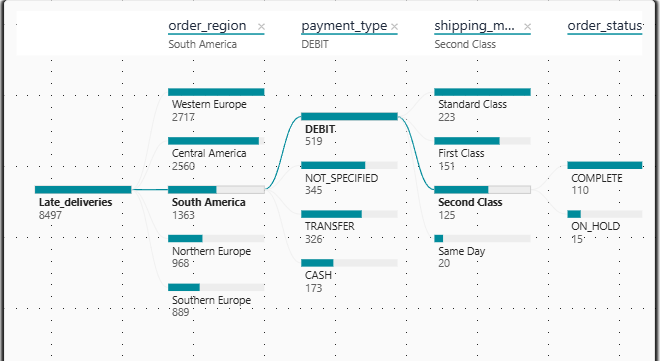

Supply Chain Management Report & Data Storytelling
Pinpointed 8,497 late deliveries across global shipping routes (led by Western Europe with 2,717 and Central America with 2,560) and modeled how aggressive discounting erodes net profit margins.
How do regional bottlenecks and discounting strategies impact supply chain profitability? Using the DataCo Smart Supply Chain dataset, raw operational records were staged in PostgreSQL, normalized into a Star Schema (fact_order_line plus customer, product, shipping, payment, and order dimensions), cleaned in Power Query, and modeled with DAX measures and Time Intelligence calculation groups in Power BI.